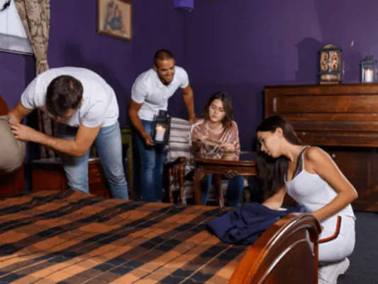
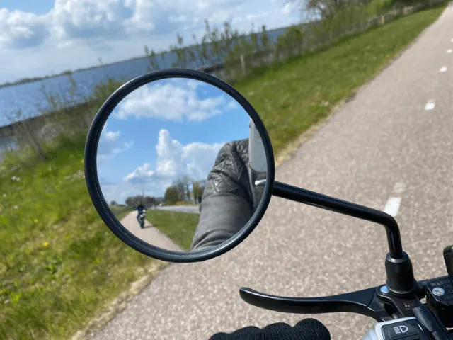
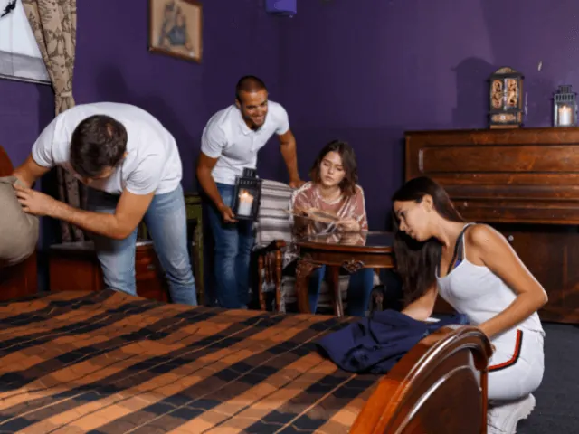
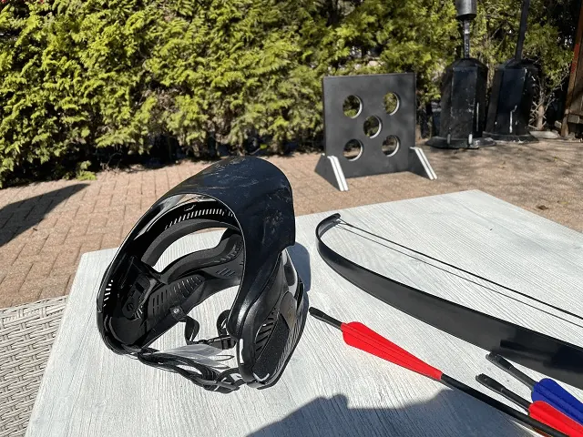

Activiteiten in Nijmegen
Gepubliceerd op 18 november 2022, bijgewerkt op 20 februari 2024

Met een grotere of kleinere groep een activiteit doen in Nijmegen en tegelijk de stad een beetje leren kennen? Keus genoeg. Waar ben je voor in de mood … sportief, VR, een leuke workshop – creatief of culinair, de stad te voet of op een e-step verkennen met een speurtocht, of een wandeling onder leiding van een gids, spanning en sensatie, quizzen … You name it! En als je niet kunt kiezen zijn er ook diverse arrangementen die activiteiten in Nijmegen combineren. Welke activiteit je ook in Nijmegen gaat doen, je zal je zeker een dag of dagdeel vermaken in deze prachtige stad.

Vriendinnenuitje
Lekker met een stel vriendinnen op pad in Nijmegen. Er zijn zoveel leuke activiteiten in Nijmegen om aan deel te nemen en te doen. Voor een grote club, maar ook voor een kleiner gezelschap!
Vriendenuitje
Met een stel vrienden op stap in het mooie Nijmegen. Leuk plan! Er is zijn zoveel leuke activiteiten te doen, dat kiezen nog lastig kan worden. Even de koppen dezelfde kant op krijgen en boeken maar!
Teamuitje
Met je team de hort op in Nijmegen. Je kunt natuurlijk gaan stappen in de leuke kroegen, maar je kunt ook (eerst) een leuke activiteit in Nijmegen gaan doen gaan doen met zijn allen. Sportief bezig zijn of de hersens laten kraken. Even de teamspirit een beetje opkrikken …
Thrillseeking
Ben je op zoek naar een spannende activiteit in Nijmegen, boek dan een ‘thrillseeking event’! Kies voor een city escape, een moorddiner of een uitdagende combi van puzzel en actie. Ga gewoon de uitdaging aan.
Bedrijfsuitje/Personeelsuitje
Een bedrijfsfeest(je) op locatie: Nijmegen biedt diverse leuke activiteiten om met elkaar te ondernemen. Workshops, uitdagende escapes en quizzen, sportieve challenges. Ga met het hele bedrijf of afdeling lekker in de actiemodus.
Familie-uitje
Organiseer jij dit jaar de familiedag? Denk eens aan een activiteit in Nijmegen. Veel keus in events voor jong en oud en heel divers. Boek een van de vele arrangementen inclusief lunch en/of diner en je hebt er geen omkijken meer naar.

Wandeling
Je kunt in en rond Nijmegen prachtige wandelingen maken. Kies voor een mooie uitgezette route door het centrum en/of een stadsdeel. Of verken het buitengebied langs de Waal en Ooypolder. Hier kun je ook prachtig fietsen trouwens
Fietstocht
Je kunt rond Nijmegen prachtige fietstochten maken. Verken Berg en Dal of Groesbeek, in het voorjaar en de zomer prachtig groen. Of verken het buitengebied langs de Waal en Ooypolder. Hier kun je ook prachtig wandelen trouwens. Geen wandelaar of fietser? Denk dan eens aan een e-step, e-chopper of een ritje met de solex.
Rondleiding met gids
De allerbeste manier om Nijmegen te verkennen en iets over de stad te weten te komen is een rondwandeling met een gids. Luister naar de verhalen over de rijke historie van deze Gelderse keizerstad en bewonder ondertussen de vele mooie straatjes en gebouwen in en rond het centrum. Combineer met winkelen en een lunch of diner en je hebt een heerlijk dagje Nijmegen te pakken!
E-chopper huren in Nijmegen
Toeren door en rond Nijmegen? Huur een e-chopper. Cool rijplezier waar je geen motorrijbewijs voor nodig hebt. Je kunt zelf op verkenning gaan of een bepaalde route rijden met eventueel nog een extra activiteit. Af en toe even opsteken onderweg … perfect!
Doe je het liever old skool? Dan huur je gewoon een solex voor een ritje in of rond Nijmegen.
E-step
Wil je de Nijmegen en omgeving verkennen, maar ben je geen wandelaar of fietser? Ga dan eens op pad met een e-step. Je kunt Nijmegen zo relaxt op eigen houtje verkennen, maar je kunt bijvoorbeeld ook een speurtocht of een kroegentocht doen. Ook mogelijk: een e-chopper, e-bike of solex.
Escaperoom
Met een paar vrienden of vriendinnen een spannende escaperoom spelen. Zet je brein aan het werk en bundel jullie krachten. Wees inventief en keep your cool. Samen komen jullie er wel uit … toch?!
Escape games
Speel een spannend spel tussen de gangen door in een escape dinner in Nijmegen. Hersenkrakers, breinbrekers en pittige raadsels maken dit etentje voor jou en je tafelgenoten tot een onvergetelijk event. Wil je het naar een ander niveau tillen, speel dan een moorddiner … Kruip in de huid van je personage, speel het script en kom erachter wat er is gebeurd dat heeft geleid tot de zaak die op jullie bordje ligt.
Voor de echte thrillseekers op zoek naar een activiteit in Nijmegen zijn nog veel meer mogelijkheden voor escape games. Bijvoorbeeld op buitenlocaties in het centrum van Nijmegen of omgeving. Je kunt met vrienden, collega’s, je sportteam, familie, kortom met wie dan ook, in een aantal varianten een city escape spelen. Ook zijn er diverse andere stadsspellen die je kunt spelen, bijvoorbeeld stadsMonopoly of een speurtocht!

Virtual Reality
Met virtual reality is the sky the limit. Je maakt dingen mee waar je alleen maar van kunt dromen (of nachtmerries van krijgt ;-). Zeg maar wat je wilt: iets spannends, iets adembenemend moois, actie of dat wat je ‘in het echt’ misschien van zijn lang zal ze leven niet zou doen … ? Zoek je grenzen op en laat je meenemen in deze wereld van de onbegrensde mogelijkheden. En … toekijken hoe iemand zijn VR-moment beleeft, is soms net zo leuk als zelf ervaren!
Dinner games
Eten en een spel spelen is een succesvolle combi! Tussen de gangen door niet onderuitzakken, maar op scherp staan. Vorm een team met een aantal tafelgenoten en werk samen. Laat ieder zijn kracht inzetten voor het team en ga voor de winst. Van een dinner quiz tot een moorddiner, culinair genieten laat zich prima koppelen aan wat food for thought!
Arrangementen met of zonder eten
Wil je een compleet dagje uit, dat kan natuurlijk ook. Er zijn heel veel arrangementen te boeken die een en ander combineren; of je boekt zelf verschillende activiteiten. Een speurtocht met een e-step, een fietstocht met een pubquiz en diner, happen en stappen, lunchen en suppen op de Waal, moorddiner en kroegentocht, bubblevoetbal en een picknick, solexrit en boerengolf … Enfin, je snapt ‘m wel.
Kunnen wij je helpen?
Mocht je een leuke uitje of activiteit willen ondernemen, maar heb je geen idee wat je wilt gaan doen dan kunnen we je daarbij helpen. Wij hebben vele ingangen bij de aanbieders en kennen daarmee bijna alle activiteiten die er te doen zijn in en om Nijmegen. Dus klim in de pen en vul het onderstaande formulier in en we gaan er een te gekke beleving van maken.